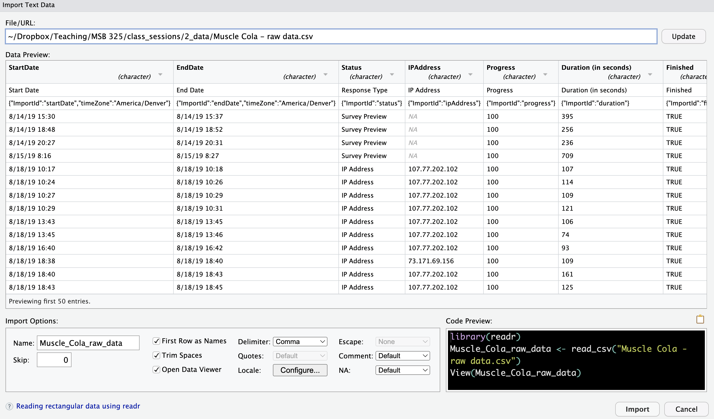
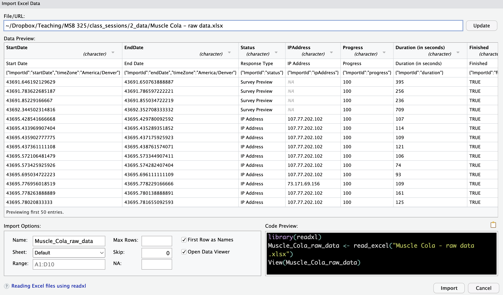

Data can come from many different sources. Whether it’s entered manually, stored in files, or pulled from a database, importing data into R is the first step in any analysis. In this chapter, we’ll explore several methods to get data into R, including typing it in manually, importing CSV and Excel files, and connecting to more complex sources like Google Sheets and databases.
We’ll focus on the most common and practical methods first—methods you’ll encounter frequently in real-world scenarios. These methods vary based on the type of data you need to import.
12.1 Typing Data Manually
If you’re working with small datasets or need to quickly test something, you might create a data frame manually in R. This is also a good way to familiarize yourself with the structure of data in R.
Here’s how to create a small data frame directly in R using the tibble() function from the tidyverse:
## Manually creating a small datasetdata <-tibble(name =c("John", "Jane", "Alice", "Bob"),age =c(25, 30, 28, 22),occupation =c("Engineer", "Doctor", "Artist", "Student"))data
# A tibble: 4 × 3
name age occupation
<chr> <dbl> <chr>
1 John 25 Engineer
2 Jane 30 Doctor
3 Alice 28 Artist
4 Bob 22 Student
Note
When the value is a string like a name, it is entered in quotes (“John”); when the value is numeric like an age, it is entered without quotes (25).
Also note that there is a comma (,) at the end of every line to signify that another argument is coming. There is no comma (,) at the end of the last argument occupation = ... because there are no more arguments after the occupation variable.
12.1.0.0.1Try it yourself:
Starting with the code that manually creates a dataset named data, change the code to add an additional variable after age named gender where the gender of John is “Male”, Jane is “Female”, Alice is “Female”, and Bob is “Male”.
The variables name, age, and occupation are created by a new line with variable_name = c(value1, value2, value3, value4). What can you do to add a variable for gender as described above?
12.1.0.2 Hint 2
Add a line after age and define the gender variable with values of “Male”, “Female”, “Female”, “Male.”
gender =c(""Male", "Female", "Female", "Male")
12.1.1 Fully worked solution:
Add a line after age and define the gender variable with values of “Male”, “Female”, “Female”, “Male”.
Create a dataset named data by calling the tibble function
2
Create the name variable with values of “John”, “Jane”, “Alice”, “Bob”
3
Create the age variable with values of 25, 30, 28, 22
4
Create the gender variable with values of “Male”, “Female”, “Female”, “Male”
5
Create the occupation variable with values of “Engineer”, “Doctor”, “Artist”, “Student”
6
Close the tibble function call with ) to enclose the arguments of the function
This method is useful for small datasets or testing, but it is increasingly tedious and inaccurate as your data grows. You’ll usually import data from external sources like CSV or Excel files.
12.2 Importing CSV Data
CSV (Comma-Separated Values) files are one of the most common formats for storing and sharing data. They are simple text files where each line corresponds to a row of data, and columns are separated by commas.
12.2.1 Importing CSV Data through RStudio IDE-Generated Code
RStudio provides a user-friendly, graphical interface to import data files. This is especially helpful for beginners because it eliminates the need to write code manually and helps you understand the process as the IDE generates the import code for you.
12.2.1.1 Steps to Import a CSV File Using the RStudio IDE:
Open the Files Pane: In the bottom-right of the RStudio interface, find the Files Pane, where you can browse the files on your computer.
Select the CSV File: Click on the .csv file that you want to import.
Open the Import Wizard: When you select the file, RStudio automatically opens an import wizard to guide you through the process.
Configure Import Settings: In the import wizard, you can adjust settings based on your dataset. Here are the key options:

RStudio IDE Settings for CSV Files
Name: Choose a name for your dataset. R will offer a default, but you can customize it.
Skip Rows: Indicate how many rows to skip from the top of the file (e.g., for metadata rows).
First Row as Names: If your file has column names in the first row, check this option.
Trim Spaces: Remove any extra spaces at the beginning or end of values.
Open Data Viewer: Check this box to preview the imported data in a table-like view.
Delimiter: By default, the delimiter is a comma (,), but if your file uses something else (e.g., a semicolon), you can change it here.
Quote: For handling text fields in your CSV that use quotes (e.g., "New York, NY").
Locale: Set regional settings for dates or number formats (e.g., European date formats).1
Escape Characters: Handle special characters that need to be “escaped,” like quotes or commas.2
Comment Lines: Ignore lines marked with specific characters (e.g., lines that start with #).
NA Values: Specify how missing values are represented (e.g., NA, NULL, ?).
Adjust Data Types: At the top of each column in the data preview, you can see the data type (e.g., character, numeric). Change the type if R has incorrectly guessed the data type:
Numeric as Character: Change text fields that should be numbers.
Dates as Character: Convert date fields to a proper date format.
Factors: Change character columns to factors (categories) if needed.
Click “Import”: Once you’ve adjusted the settings, click the “Import” button to bring the data into R.
View the Data: The data opens in RStudio’s Data Viewer, where you can inspect it visually.
Save the Import Code: The IDE automatically generates R code for the import and runs it in the console. Copy this code into your script to reuse it later, so you don’t have to reconfigure the settings manually each time.
12.2.1.2 Advantages of Using the IDE Method
Easy to Use: You don’t need to memorize code or syntax—just click through the interface.
Learn as You Go: The IDE generates code for you, which helps you learn R’s import functions over time.
Efficient for Quick Imports: Great when you need to quickly import and inspect new files.
12.2.2 Importing CSV Data through AI-Generated Code
While importing .csv data through the RStudio IDE is intuitive and visual, it has its limitations. The process can be manual, and any changes you make must be repeated each time you want to import the data. This is because the IDE doesn’t automatically store the import code in your R script, making the process not automatically reproducible. This is where AI-generated code can be a powerful solution.
12.2.2.1 Why Use AI-Generated Code?
Using AI to generate code opens up new possibilities for data analysis. Here are some of the benefits:
Efficiency: AI can write code quickly, reducing the time you spend manually configuring options in the IDE. This means you can focus more on analyzing the data rather than the import process.
Reproducibility: When AI generates code, it can be directly included in your R script, ensuring that your data imports are consistent each time you run the script. This reproducibility is crucial for accurate and reliable data analysis.
Flexibility: AI can handle more complex scenarios by understanding your specific requirements. You can use prompts to specify exactly how your data should be imported, including custom configurations that might be harder to set up manually.
Learning Opportunity: Seeing the code generated by AI can help you understand R more deeply. By examining and tweaking the code, you learn how to accomplish specific tasks, making you more comfortable with coding in general.
12.2.2.2 Solutions for Reproducibility
To make your workflow more efficient and reliable, consider the following approaches:
Copy the Code from the Console: After using the RStudio IDE to import data, copy the generated code from the console into your script. This allows you to reproduce the import process every time you run your script, preserving the settings you configured in the IDE.
Generate Code Using AI: An even more efficient solution is to use AI to generate the import code for you. By providing a well-crafted prompt, you can ensure reproducibility from the start without relying on manual steps. This method can save time and reduce the risk of errors.
12.2.2.3 Importing Simple .csv Data with AI-Generated Code
To import a simple .csv file using AI, provide the name of your .csv file and the desired name for the dataset in R.
AI Prompt:
Importing .csv Data: “Please provide the tidyverse code to import a .csv file named tb.csv and name the resulting tibble tb_data.”
12.2.2.4 Importing Qualtrics .csv Data with AI-Generated Code
Qualtrics exports often contain metadata in both rows and columns. For example, the first and third rows, as well as certain columns, might include metadata you need to exclude. To handle this, you can use a more complex AI prompt like the one below.
AI Prompt:
Importing .csv Data with Metadata:
Please provide the tidyverse code to import a CSV file named ‘“long Qualtrics file name.csv”’ with the following requirements:
The first row contains metadata and should be skipped.
The second row contains column names and should be used as headers.
The third row contains metadata and should be excluded.
The columns from ‘Start Date’ through ‘User Language’ also contain metadata and should be excluded from the dataset.
Ensure that the data types are converted appropriately after import.
Name the resulting tibble descriptive_name_data.
By incorporating AI into your workflow, you can streamline the data import process, making it faster, more reliable, and easier to maintain. You maintain reproducibility and can easily handle more complex import tasks, such as skipping metadata rows and columns. This approach is especially useful when working with complex datasets or repetitive tasks where consistency is key.
12.2.3 Understanding and Verifying Code to Import CSV Files
12.2.3.1 Owning Your Code
While the RStudio IDE and AI tools can generate useful code for importing data, the quality and accuracy of the code they produce depend entirely on the quality of the prompts you provide through their respective interfaces. In both cases, you are responsible for the code because you generated the prompts that led to its creation.
This means that you, the user, must fully understand the code being generated to determine whether it accomplishes what you expected and to identify any errors. Owning the code means taking responsibility for both the prompt and the outcome, ensuring that the data is imported and handled as intended.
Understanding the code empowers you to:
Verify the output: Ensure the code produces the correct results.
Debug errors: Identify and fix any issues that arise.
Adapt the code: Modify the code for different datasets or changing needs.
12.2.3.2 Reference Templates and Common Scenarios
Here, we’ll guide you through common scenarios for importing data, particularly dealing with .csv files from sources like Qualtrics. Understanding these reference templates will help you better recognize and verify the code you generate from the IDE or AI.
By learning how to write or adapt your own code, you’ll be able to confirm the accuracy of what your tools produce, troubleshoot errors, and modify scripts for future use.
12.2.3.3 Importing a Simple CSV File
To import a CSV file into R, we use the read_csv() function from the readr package, part of the tidyverse:
## Importing data from a CSV filedata <-read_csv("path/to/your/file.csv")
Replace "path/to/your/file.csv" with the actual file path of your CSV file. This method is ideal for structured data that’s exported from spreadsheets, databases, or other software.
12.2.3.4 Integrated Code Example: Cleaning Qualtrics .csv Data
Let’s go through a more complex example of importing Qualtrics data that includes metadata. We will build a single integrated code block, along with explanations for each step.
12.2.3.4.1 Handling Qualtrics Metadata
Qualtrics survey data often contains metadata that can interfere with your analysis. This metadata can be in the form of extra rows or columns that should be excluded. Below, we’ll demonstrate how to:
Skip Rows: To ignore metadata rows during import.
Remove Unwanted Columns: To exclude metadata columns.
Convert Data Types: To correct column types after import.
12.2.3.4.2 What Is Metadata?
Metadata is “data about data.” In the context of a Qualtrics survey, it refers to the additional information generated by the survey platform about your actual survey data (the responses). This can include details about when the survey was completed, how long it took, the version of the survey, and more.
12.2.3.5 Reference Code Template
Here’s a consolidated example for handling Qualtrics metadata during and after import:
## Import the CSV data and skip the first (metadata) rowdescriptive_name_data <-read_csv("long Qualtrics CSV file name.csv", skip =1) |>## Remove unwanted columnsselect(!(column1:columnN)) |>## where column1 is the first column of metadata and columnN is the last column of metadata.slice(-1) |>## Remove the remaining row of metadatatype_convert() ## Reevaluate the data types
12.2.3.5.1 Explanation:
skip = 1: Skips the first row (metadata).
select(!(column1:columnN)): Removes metadata columns 1 through N.
slice(-1): Deletes the (new) first row (old third row) that still contains metadata.
type_convert(): Automatically converts the data to appropriate types after cleaning.
12.2.3.6 Understanding and Verifying Generated Code
While the RStudio IDE and AI can generate similar code, slight differences can significantly impact functionality. Let’s look at how to spot these:
Check for Correct Syntax: Make sure the function names, parameters, and file paths match your dataset.
Verify Skipped Rows and Selected Columns: Confirm that the metadata has been correctly removed. Compare your results with the raw file to ensure accuracy.
Watch for Correct Data Types: After running type_convert(), use glimpse(data) to verify that columns have been correctly identified as numeric, character, or date.
12.2.3.6.1 Common Debugging Tips:
Mismatched Column Types: If you still see unexpected column types, re-examine your data after removing metadata. Sometimes extra characters or spaces can cause misclassification.
Incorrect Rows or Columns: Use head(data) and summary(data) to verify that your data was imported correctly.
Unexpected Errors: Make sure all necessary libraries are loaded. Check for typos in your column or file names.
12.2.3.7Exercise: Try it yourself:
Let’s apply these steps to a real example. An entrepreneur had the idea to start a popup cupcake stand that would show up outside of university classrooms between classes. Students would be able to get a snack without leaving the classroom area or carrying it from home. The dataset is in a file named cupcakes.csv and the file is located in the data subdirectory of this document. Let’s import this CSV data file and deal with the metadata inserted by the Qualtrics survey:
Name the imported data object cupcakes_data.
Skip the first (metadata) row.
Delete the columns of metatdata (columns 1 through 17 are metadata; columns 18 through 26 are survey data)
Delete the new first row (original third row) of metatdata.
Change the name of the data object as well as the argument to the read_csv() function to import the cupcakes data. Skip the first and third rows (metadata) and delete columns 1 through 17. Re-evaluate the data types.
12.2.3.9 Hint 2
Change the name data to cupcakes_data
Change the path to the file to data
Change the name of the file to be imported to cupcakes.csv
Add the skip argument to the read_csv function
Delete the columns of metadata
Delete the (new) first row
Convert the data types of the remaining variables.
Change the code to match the specifics of importing the csv file cupcakes.csv.
Change the name of the file to be imported to cupcakes.csv
Add the skip argument to the read_csv function
Delete the columns of metadata
Delete the (new) first row
Convert the data types of the remaining variables.
Mastering how to write, understand, and verify code will make you more confident in using R for data analysis, even when relying on tools like the IDE or AI to generate code for you. Always make sure you know what your code is doing and be prepared to adjust and debug as needed.
12.2.4 Why Use CSV Files with R?
Universal Format: CSV (Comma Separated Values) is a widely supported format across different platforms and tools, making it easy to share and transfer data.
Lightweight and Efficient: CSV files are simple text files, so they are lightweight and can be processed quickly by R without needing extra software or dependencies.
Standard Structure: CSV files have a straightforward row-and-column structure, making them easy to work with in R using functions like read.csv() or readr::read_csv().
Human-Readable: Since CSV files are plain text, you can easily open them in any text editor or spreadsheet software to view the raw data.
Minimal Formatting: CSV files don’t include complex formatting like fonts, formulas, or colors. This reduces the risk of issues during import, making it easier to focus on the actual data.
Preferred Format in Data Science: CSV is widely used by data science professionals due to its simplicity and compatibility. It avoids the problems associated with proprietary formats and is ideal for storing raw data.
Mastering CSV imports allows you to work efficiently with data in its simplest form, integrating seamlessly into your R workflow for analysis and visualization.
12.3 Importing Excel Data
Excel is a widely used tool in business for data collection and analysis. R makes it easy to import Excel data, thanks to the readxl package. Whether you’re working with .xls or .xlsx formats, readxl provides a straightforward way to read Excel files into R.
12.3.1 Installing and Loading the readxl Package
To work with Excel files in R, you need the readxl package. If it’s not already installed, you can install and load it with the following commands:
install.packages("readxl") ## Install the package (run once)library(readxl) ## Load the package
Once the readxl package is installed, you don’t need to install it again unless you are updating to a new version. However, you do need to load the package with library(readxl) every time you run your R script.
To avoid unnecessary installs, comment out the install.packages() line after the first installation. You should only keep the library(readxl) line active when running your code.
#install.packages("readxl") ## Install the package (run once)library(readxl) ## Load the package
12.3.2 Importing Excel Data through RStudio IDE-Generated Code
RStudio provides a graphical interface for importing Excel files, which can be easier than writing code manually. This approach allows you to visually select your settings and have RStudio generate the corresponding R code for you.
12.3.2.1 Steps to Import Excel Files Using RStudio IDE:
Navigate to the Files Pane: In the bottom-right corner of the RStudio interface, find the Files Pane where you can browse your local files.
Select the Excel File: Click on the .xlsx file you want to import.
Open the Import Wizard: RStudio will automatically launch the import wizard for Excel files.
Configure the Import Settings:

RStudio IDE Settings for Excel Files
Name: Specify the name of the imported tibble (data frame). R will suggest a default name, but you can change it.
Sheet: Choose the worksheet you want to import (default is the first sheet).
Range: Optionally, specify the range of cells to import if you only need part of the data.
Max Rows: Limit the number of rows if needed.
Skip: Skip a specific number of rows (useful for ignoring headers or metadata).
NA Strings: Define any values that should be treated as missing (NA).
First Row as Names: Check this box if the first row contains column names.
Open Data Viewer: Optionally, check this box to view the data after import in RStudio’s spreadsheet-like viewer.
Save the Import Code: After completing the import, copy the generated R code from the console and paste it into your R script. This way, you can reuse the code for future imports without needing to reconfigure the settings.
12.3.3 Importing Excel Data through AI-Generated Code
Importing Excel spreadsheets (.xlsx) through the RStudio IDE is intuitive and visual but it is also manual and not automatically reproducible. An AI can provide code for you R script that will work every time you need to import the data.
AI Prompt:
Importing .xlsx Data: “Please provide the tidyverse code to import a .xlsx file named data_file.xlsx and name the resulting tibble descriptive_name_data.”
12.3.3.1 Importing Qualtrics .xlsx Data with AI-Generated Code
Qualtrics exports often contain metadata in both rows and columns. For example, the first and third rows, as well as certain columns, might include metadata you need to exclude. To handle this, you can use a more complex AI prompt like the one below.
AI Prompt:
Importing .xlsx Data with Metadata:
Please provide the tidyverse code to import an Excel file named "long Qualtrics file name.xlsx" with the following requirements:
The first row contains metadata and should be skipped.
The second row contains column names and should be used as headers.
The third row contains metadata and should be excluded.
Columns A through R (i.e., Start Date through User Language) contain metadata and should be excluded from the dataset.
Ensure that the data types are converted appropriately after import.
Name the resulting tibble descriptive_name_data.
By using AI to generate the import code, you maintain reproducibility and can easily handle more complex import tasks, such as skipping metadata rows and columns.
12.3.4 Understanding and Verifying Code to Import Excel Data
12.3.4.1 Owning Your Code
When using RStudio’s IDE or AI-generated tools, the quality and reliability of the code depend on the clarity of your prompts or configuration choices. Owning the code means taking responsibility for what the code does, verifying its output, and being able to debug or modify it if needed. This becomes especially important when working with more complex data formats like Excel files.
Understanding and being able to read the code allows you to:
Verify the functionality: Make sure the data imports correctly and any specified settings work as expected.
Troubleshoot errors: Recognize and resolve common issues, such as misinterpreted data types or skipped rows.
Adapt to new requirements: Modify code for different Excel files, sheets, or specific data ranges.
12.3.4.2 Reference Code Template for Excel Imports
The read_excel() function from the readxl package is typically used to import Excel files into R. Below is a reference template that you can compare with your generated code:
## Template for importing Excel datadata <-read_excel("path/to/your/file.xlsx", skip =1) |>## Skip the first row of metadataslice(-1) |>## Remove the new first row (originally the third row) of metadataselect(-(1:N)) |>## Exclude columns from column 1 through column N - can also use column headerstype.convert(). ## Re-evaluate the data types for all columns
12.3.4.2.1 Explanation:
skip = 1: Skips the first row of metadata, making the second row the column headers
slice(-1): Remove the new first row (originally the third row) of metadata
select(-(1:N)): Exclude columns of metadata (1 through N) by their column numbers - can also exclude by their column names
type_convert(): Automatically converts the data to appropriate types after cleaning.
Replace “path/to/your/file.xlsx” with the actual file path, and modify the arguments based on your specific data needs. This code provides more control over the import process, allowing you to skip metadata rows, select a specific sheet, or limit the import to a defined range of cells.
12.3.4.3Exercise: Try it yourself:
The cupcake entrepreneur is also considering a popup cinnamon roll stand. The Qualtrics dataset is an Excel file named cinnamon_rolls.xlsx and the file is located in the data subdirectory of this document. It has two sheets. The first sheet contains all of the original data where the first and third rows are meta data and columns A through N are also meta data. The second sheet has been edited in Excel to remove all meta data to include only customer data.
It is more reproducible to use code during data import than to manually edit the spreadsheet. Change the code to successfully import only the customer data (excluding the meta data) from the first sheet of the cinnamon rolls Excel file. Note that the customer data is found in columns O through X and there were 23 respondents.
Let’s import this Excel data file:
Name the data object cinnamon_rolls_data
Skip the first row of metadata
Remove the remaining row of metadata if there is one
Change the arguments of the read_excel() function to specify the name of the data, and the skip argument to skip the first row of metadata. Then delete the remaining row of metadata (if there is one), exclude the columns of metadata, and re-evaluate the data types.
12.3.4.5 Hint 2
Change the data object name to cinnamon_rolls_data
Set the skip argument to exclude the first row of metadata
Delete the remaining row of metadata (if there is one) with slice()
Remove the columns of metadata with select()
Re-evaluate the data types with type.convert()
Change the code to skip the first row of metadata making the second row column headers. Then remove the new first row of metadata because there is one, then exclude columns 1 through 14 containing metadata, and re-evaluate the data types.
Change the name of the file to be imported to cinnamon_rolls.xlsx
Skip the first row of metadata with skip = 1
Remove the new first row of metadata with slice(-1)
Exclude columns 1 through 14 that contain metadata with select(-(1:14))
Convert the data types of the remaining variables with type.convert()
12.3.5 Advantages of Using Excel with R
Widely Used: Excel is one of the most popular spreadsheet tools, and many organizations use it to store data. Learning how to import Excel files into R allows you to leverage existing data sources efficiently.
Multi-Sheet Support: Excel often contains multiple sheets of data, and readxl makes it easy to access specific sheets.
No Need for External Dependencies: Unlike some other methods, readxl does not require external Java or Perl dependencies, making it lightweight and straightforward to use.
By mastering Excel imports, you’ll be able to integrate datasets stored in spreadsheets into your R workflow seamlessly, allowing for further manipulation, analysis, and visualization.
12.4 Importing Data from Google Sheets
In addition to CSV and Excel files, you may often need to import data directly from Google Sheets. Google Sheets is a popular cloud-based spreadsheet application that allows you to share and collaborate on data. Using the googlesheets4 package, you can import data directly from a Google Sheet into R.
12.4.1 Install the googlesheets4 Package
If you haven’t already installed the googlesheets4 package, you can do so by running the following command:
install.packages("googlesheets4")
Then, load the package:
library(googlesheets4)
12.4.2No Option to Import through RStudio IDE-Generated Code
As we saw earlier, using the RStudio IDE to import data can be a helpful way to quickly set up an import. Unfortunately, RStudio has no option to import data from a Google Sheet using the graphical interface of the IDE. We must use AI-generated code or user-generated code to import data from a Google sheet.
12.4.3 Import Google Sheets Data through AI-Generated Code
To import a Google Sheet through AI, you need to provide the AI with the URL of your Google Sheet and specify the name you want to assign the dataset in R. Additionally, you’ll need to ensure the googlesheets4 package is installed and loaded.
AI Prompt:
Import Google Sheets data:
Please provide the tidyverse code to import a Google Sheet from the following URL: https://docs.google.com/spreadsheets/d/your_sheet_id/edit with the following requirements:
Use the googlesheets4 package to read the data.
Ensure that any necessary authentication is handled (e.g., prompt for authorization).
Import the default sheet from the Google Sheet.
Name the resulting tibble sheet_data.
12.4.4 Import Google Sheets Data through User-Generated Code
12.4.4.1 Understanding and Verifying the AI-Generated Code
12.4.4.2 Authorize Access to a Google Sheet
When you first attempt to read from a Google Sheet, googlesheets4 will prompt you to authorize access to your Google account. This step allows R to read the data from your Google Sheets. You’ll be guided through a browser window where you’ll log into your Google account and grant permission.
12.4.4.3 Importing Data from Google Sheets
To read data from a Google Sheet, you will need the URL of the Google Sheet. Here’s an example of how to import data:
## Import data from a Google Sheetsheet_url <-"https://docs.google.com/spreadsheets/d/your_sheet_id/edit"data <-read_sheet(sheet_url)data
Replace "https://docs.google.com/spreadsheets/d/your_sheet_id/edit" with the actual URL of your Google Sheet.
12.4.4.3.1 Selecting specific sheets
If the Google Sheet contains multiple tabs, you can specify which sheet to read using the sheet argument:
data <-read_sheet(sheet_url, sheet ="Sheet2")
The default name of the first Google worksheet is Sheet1 in contrast to the default name of the first Excel worksheet Sheet0.
12.4.4.3.2 Specifying a range
You can also specify a particular range of cells to import:
data <-read_sheet(sheet_url, range ="A1:D10")
This is particularly useful if you only need a subset of the data from the sheet.
12.4.4.4 Advantages of Using Google Sheets
Real-time collaboration: Google Sheets allows you to collaborate with others in real-time, making it ideal for shared data collection and updates.
Cloud-based: Since Google Sheets is cloud-based, you can access the latest version of your data without needing to manually download and upload files.
Simple integration with R: With googlesheets4, importing data from Google Sheets is as straightforward as reading a CSV file.
By using Google Sheets in combination with R, you can work with dynamic datasets that are updated live, streamlining collaboration and analysis.
12.5 Importing Data from Databases
In many cases, data is stored in databases rather than in spreadsheets or files. R provides excellent tools for connecting to databases, querying data, and importing it for analysis. In this section, we will use the DBI package along with RSQLite to connect to SQLite databases. These tools are versatile and can also be adapted to connect to other database systems such as PostgreSQL, MySQL, or SQL Server with minimal changes.
If you haven’t already installed the DBI and RSQLite packages, you can do so by running the following commands. Then load the libraries:
### Install the `DBI` and `RSQLite` Packagesinstall.packages("DBI")install.packages("RSQLite")### Load the packageslibrary(DBI)library(RSQLite)
12.5.1 Connecting to an SQLite Database
SQLite is a lightweight, file-based database that is easy to work with. To connect to an SQLite database in R, use the dbConnect() function from the DBI package. Here’s an example of how to connect to an SQLite database:
## Create a connection to the SQLite databasecon <-dbConnect(RSQLite::SQLite(), "path/to/your/database.sqlite")
Replace "path/to/your/database.sqlite" with the path to your SQLite database file.
12.5.2 Querying Data from the Database
Once you’ve established a connection, you can run SQL queries directly from R to extract the data you need. For example, you can use the dbGetQuery() function to run a SELECT query and store the result in a data frame:
## Run a SQL query and retrieve datadata <-dbGetQuery(con, "SELECT * FROM your_table")## View the dataprint(data)
This command runs a SQL query that selects all the data from the specified table (your_table) in the database.
12.5.3 Exploring Tables and Metadata
You can explore the structure of your database and list all available tables with the following command:
## List all tables in the databasetables <-dbListTables(con)print(tables)
To examine the structure of a particular table, you can run:
## List the fields in a specific tablefields <-dbListFields(con, "your_table")print(fields)
This can be helpful when you need to understand the schema of the database.
12.5.4 Disconnecting from the Database
After you have finished working with the database, it is good practice to disconnect from it. Use the dbDisconnect() function to close the connection:
## Disconnect from the databasedbDisconnect(con)
12.5.5 Using Databases Other Than SQLite
The process for connecting to other databases (such as PostgreSQL, MySQL, or SQL Server) is similar. The main difference is that you will use a different driver package specific to that database (e.g., RPostgres for PostgreSQL, RMySQL for MySQL).
Here’s an example of connecting to a PostgreSQL database:
## Install the PostgreSQL driverinstall.packages("RPostgres")## Load the packagelibrary(RPostgres)## Create a connection to a PostgreSQL databasecon <-dbConnect(RPostgres::Postgres(), dbname ="your_db_name", host ="localhost", port =5432, user ="your_username", password ="your_password")
The same DBI functions like dbGetQuery(), dbListTables(), and dbDisconnect() will work with any database supported by DBI.
12.5.6 Advantages of Working with Databases in R
Scalability: Databases can handle much larger datasets than spreadsheets or CSV files. By connecting to a database, you can query only the data you need, without loading everything into memory.
Flexibility: Using SQL queries, you can filter, join, and aggregate data directly within the database, reducing the amount of data processing you need to do in R.
Interoperability: The DBI package supports a wide range of databases, including SQLite, PostgreSQL, MySQL, SQL Server, and more, making it a versatile tool for data analysis.
By using the DBI and RSQLite packages, you can seamlessly integrate databases into your R workflow, query data directly from the source, and manage large datasets with ease.
12.6 Importing Web Data
In our connected world, much valuable data resides online and is accessible through web services and APIs (Application Programming Interfaces). Using R, you can connect to these web services to pull in data directly. In this section, we will introduce how to use the httr package to access APIs and import data from web services into R.
APIs are commonly used to retrieve data from various platforms such as social media sites, financial databases, weather services, and more. The httr package makes it simple to send HTTP requests and retrieve data from these APIs.
12.6.1 Install and Load the httr Package
If you haven’t already installed the httr package, you can do so and then load the package with the following commands:
install.packages("httr")library(httr)
12.6.2 Making an API Request
APIs usually require you to make HTTP requests, and they respond with data in formats such as JSON or XML. The httr package simplifies this process by providing functions to make requests and handle responses.
Here’s an example of how to make a GET request to an API:
## Example: Making a GET request to a public APIresponse <-GET("https://api.example.com/data")## Check the status of the responsestatus_code(response)## View the content of the responsecontent(response, "text")
GET(): Sends a GET request to the API endpoint. Replace "https://api.example.com/data" with the actual API endpoint you want to query.
status_code(response): Returns the HTTP status code of the response. A status code of 200 means the request was successful.
content(response, “text”): Retrieves the content of the response as text. In many cases, the response will be in JSON format.
12.6.3 Parsing JSON Data
APIs often return data in JSON (JavaScript Object Notation) format. After retrieving the response, you need to parse the JSON data and convert it into a format that R can work with, such as a data frame.
To parse JSON data, you can use the jsonlite package:
install.packages("jsonlite")library(jsonlite)## Parse the JSON content and convert it to a data framedata <-fromJSON(content(response, "text"))## View the dataprint(data)
This code converts the JSON response into a data frame that you can use for further analysis in R.
12.6.4 Using API Keys and Authentication
Many APIs require an API key or some form of authentication to access the data. You will need to include your API key in the request headers. Here’s an example of how to make an authenticated request:
## Example: Making an authenticated GET requestapi_key <-"your_api_key"response <-GET("https://api.example.com/data", add_headers(Authorization =paste("Bearer", api_key)))## Parse the JSON content and convert it to a data framedata <-fromJSON(content(response, "text"))## View the dataprint(data)
Replace "your_api_key" with the actual API key provided by the web service. The add_headers() function adds the necessary authorization to the request.
12.6.5 Examples
12.6.5.1 Data on the International Space Station’s location currently in space
Here’s an example of how you could use the httr package to fetch data on the location of the International Space Station (ISS) at this moment:
library(httr)library(jsonlite)## Make a GET request to Open Notify API (current ISS location)response <-GET("http://api.open-notify.org/iss-now.json")data <-fromJSON(content(response, "text"))## View the dataprint(data)
This code sends a request to the open-notify.org API for the ISS location data. The JSON response is parsed and converted into a format you can analyze.
12.6.5.2 Get random images and facts about different dog breeds.
Here’s an example of how you could use the httr package to fetch data on random dog breeds:
library(httr)library(jsonlite)## Make a GET request to The Dog API (random dog image)response <-GET("https://dog.ceo/api/breeds/image/random")data <-fromJSON(content(response, "text"))## View the dataprint(data)
This code sends a request to the dog.ceo API for the url of a random dog breed. The JSON response is parsed and converted into a format you can analyze.
Note that these examples are chosen to avoid providing a personal api. Usually, you would need to sign up for an account and log in. Once logged in, navigate to the API keys section and generate an API key. Copy the generated API key and paste it in the approprate place for an api key in your code.
12.6.6 Advantages of Importing Web Data
Dynamic and Up-to-Date: Web APIs provide access to real-time data, such as stock prices, social media trends, or weather information.
Automated Data Collection: Once you connect to an API, you can automate data collection, fetching the latest data without manual intervention.
Access to Specialized Data: Many platforms, such as Twitter, Google, or financial services, expose their data through APIs, allowing you to leverage these valuable data sources in your analysis.
By using APIs and the httr package, you can integrate real-time web data into your R workflows, opening up a wide range of possibilities for data analysis.
Leave the default Locale setting unless you are working with European CSVs where the file uses commas for decimals and periods for thousands separators.; dealing with data from multiple countries with different encoding, date formats, or language-based special characters; or when text includes special non-ASCII characters (e.g., accented letters).↩︎
In CSV files, escaping is necessary when you want to include characters that otherwise have a special meaning in the file, such as the delimiter (comma) or quotation marks within a field, without breaking the file’s structure.↩︎